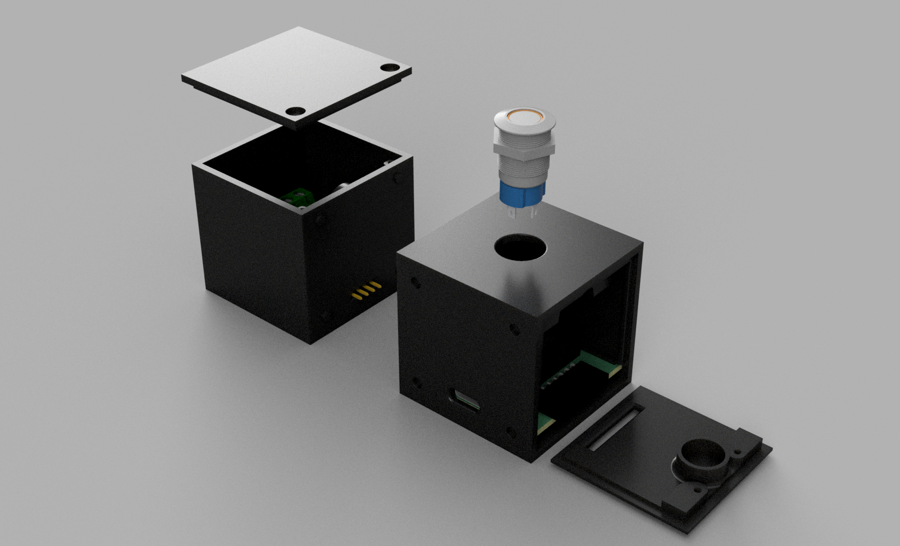
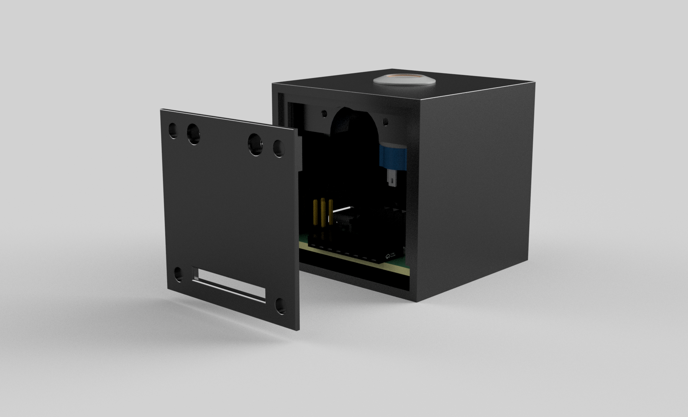
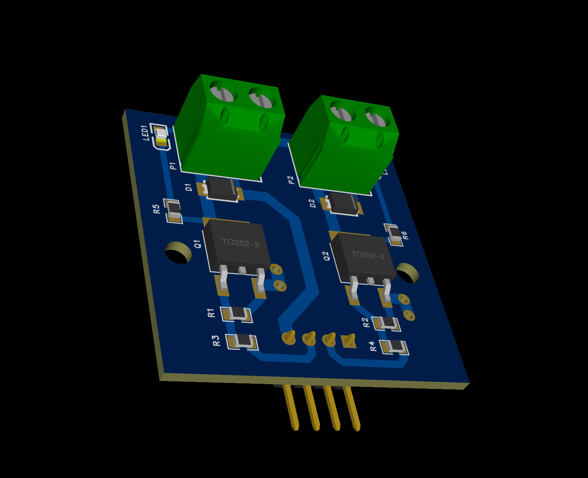

Main · контроллер
Прошивка, локальные сценарии, Wi-Fi и обмен с сервером.
Модульная IoT-система
Один Main — отдельные кубики для датчиков, питания и управления нагрузками.

Идея системы
Прошивка, локальные сценарии, Wi-Fi и обмен с сервером.
Два MOSFET-канала управляют допустимыми DC-нагрузками.
Будущий модуль датчиков; пока не входит в текущие платы.
Будущий модуль питания, которому потребуется режим энергосбережения.
Все модули подключаются к Main. Сейчас проектируются платы Main и Load.
Как это работает
Кнопка, расписание, сервер или будущий кубик Sensors.
Проверяет команду и управляет логикой локально.
Коммутирует совместимую DC-нагрузку по одному из двух каналов.
Main сам по себе не включает полезную нагрузку. Сервер и интернет не должны обходить локальные ограничения.
Main Cube
ESP32-C3 SuperMini, прошивка и Wi-Fi.
USB-C и разъёмы модулей по схеме.
Кнопка 12 мм видна на корпусном CAD.
GPIO — только логика 3,3 В, не питание нагрузки.

Load Cube
Два N-канальных MOSFET AOD4184 по текущей схеме.
На рендере — два винтовых выходных клеммника.
5 В / 50 Вт (≈10 А) на канал; оба канала — около 20 А. Пока не испытано.
230 В AC запрещено; гальванической развязки нет.

Электрические границы
Main питается от 5 В. Не считать USB-C или его кабель источником тока для Load: путь 10–20 А нужно подтвердить отдельно.
3,3 В. Не подавать 5 В или нагрузочный ток на GPIO ESP32-C3.
Цель: 5 В, 50 Вт (≈10 А) на канал. Пока не испытано; это не подтверждённый рейтинг.
Измерить пусковой/непрерывный ток, падение напряжения, затвор и нагрев каждого канала.
Планируется отдельный силовой коннектор 5 В; его наличие не подтверждает ток всего пути. Проверить источник, дорожки Main/Load, кабель, коннекторы, клеммы и нагрев при 10 А/канал и двух включённых каналах. До проверки не подключать такую нагрузку. Внешний IRF520N — другая плата.
Куда расширяется система
Включить канал кнопкой или по расписанию — первый проверяемый сценарий.
Получать температуру, влажность, давление или газовые показания после выбора конкретных датчиков.
В будущем — связывать достоверное измерение с действием по безопасному локальному правилу.
Потребует преобразователя и сна; автономность ещё не рассчитана.
Примеры — направления развития, а не функции или точность уже изготовленной системы.
Бизнес-гипотеза
Энтузиасты умного дома и DIY — гипотеза для интервью.
7 990–10 990 ₽ за Main + Load — сценарный диапазон, не рыночная цена.
Базовая валовая маржа в модели около 39%; вклад около 32% до CAC, налогов и доставки.
Ориентир 150–350 тыс. ₽ на инженерные единицы и малый пилот; без зарплат и полной сертификации.
Все финансовые числа — допущения без котировок. Реальных интервью и 100-покупательской панели не проводилось.
Вердикт и следующий шаг
1
Проверить два канала, нагрев и безопасное выключение.
2
Проверить корпуса, соединения и понятность маркировки.
3
Наблюдать сборку, провести 15–25 интервью и проверить цену.
4
Заменить допущения на реальные BOM, комиссии и гарантии.
Итог сегодня: NOT YET для серии. Следующий рубеж — безопасный демонстратор Main + Load и доказательства спроса.